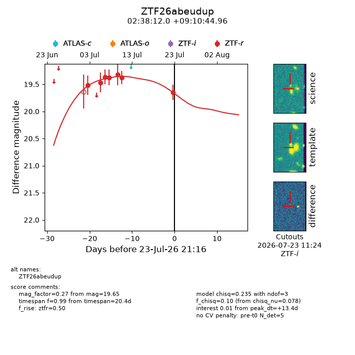
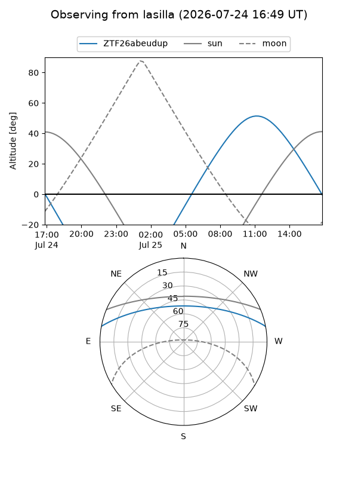
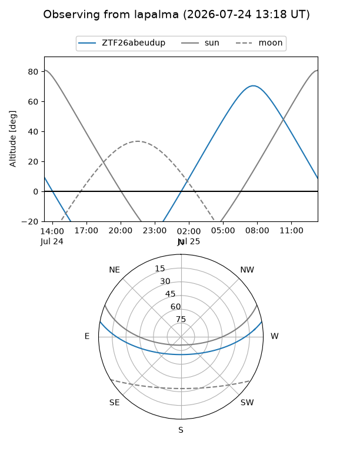
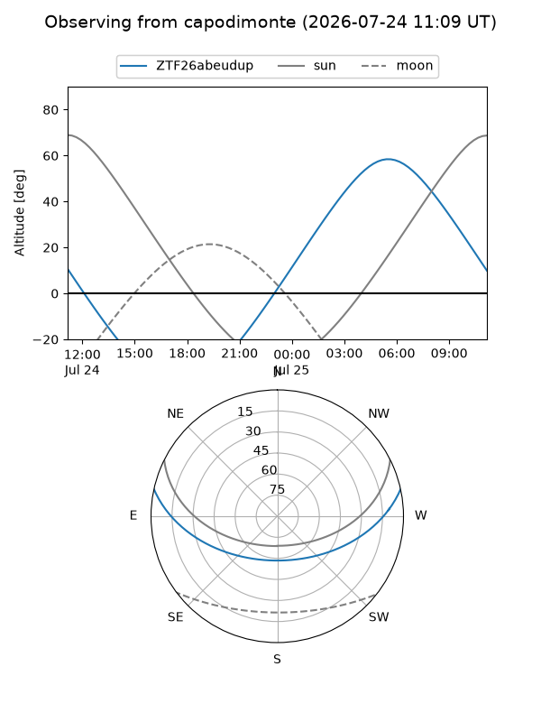
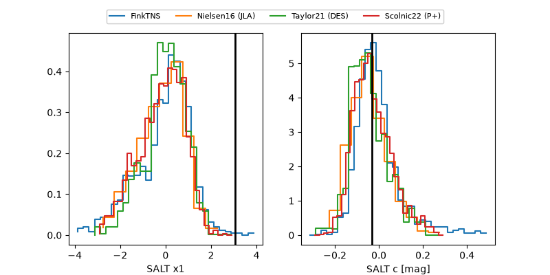

ZTF26abeudup
Target ZTF26abeudup at 2026-07-23 21:19
Aliases and brokers:
FINK-ZTF: ztf.fink-portal.org/ZTF26abeudup
Lasair-ZTF: lasair-ztf.lsst.ac.uk/objects/ZTF26abeudup
ALeRCE-ZTF: alerce.online/object/ZTF26abeudup
Direct TNS query: direct search
alt names
ZTF26abeudup (ztf,fink_ztf)
Coordinates:
equatorial (ra, dec) = 39.5502,+9.17916
equatorial (HMS+DMS) = 02:38:12.05,+09:10:44.96
galactic (l, b) = (162.1081,-45.41686)
Flags:
peak dt: +13.4
Photometry:
last ztfr=19.65
7 ztfr detections
Lightcurve

Visibility



Additional plots
